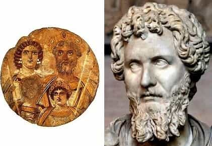

The recent years have seen a sharp rise of the historical facts that the British media voluntarily distorts to depict them as more inclusive and politically correct. The recent outbursts of liberals online accusing experts of “whitewashing” history are in fact a projection to divert our attention from the mainstream media of Britain trying to falsely portray Ancient and Medieval Britain as being “ethnically diverse”. Here are a few examples of clear historical manipulation.
1. King Lear, the film (2016)

Shakespeare’s tragedy is butchered in this joint project of the BBC and the Royal Exchange Theatre, portraying Lear and his daughters as being black because “it is black history month” and the Muslim Taqqiyah artist and Mayor of London, Sadiq Khan, says that it is the way things will be from now on. So progressive, Captain Sweden would be proud.
From the historical characters that inspired King Lear, the historical period in which the play is set, and how Shakespeare described it, we know that Lear and the other characters were Anglo-Saxons and therefore white.
2. Troy: Fall Of A City (2017)
We follow up with an upcoming series financed by the BBC (yes, again) supposedly depicting the Trojan War of Homer’s Iliad. But in this series, the hero Achilles, his friend Patroclus and the God Zeus are black.
From the countless representations in Greek and Roman art and thousands of archaeological discoveries and evidence, Achilles, Patroclus and Zeus, even if they are fictional character, are represented as white by their creators.
British series’s Achilles v.s “Achilles being taught how to play the Lyra” (first century A.D Herculanum fresco)
The South African actor that will play Patroclus v.s the Greek representation of Patroclus, getting his arm bandaged by Achilles (amphora, 500 B.C)
The British-Nigerian Zeus and the Greek Zeus depicted on a ancient clay vessel, kept at the British museum, nonetheless
I think here the creators are being quite “problematic and inherently racist” because “Helen of Troy was the most beautiful woman in Greece,” according to the Illiad, yet the actress is white. And why didn’t they cast beautiful, strong independent women like Serena Williams or Leslie Jones to play Helen of Detroit Troy? Could it be that casting those people (the words “women” and “actresses” do not apply in that particular case) as the love interest is not believable for the audience?
3. BBC Teach’s The Story of Britain (2016)
British child on the left, Roman slave on the right
In 2016, the BBC (did not see that one coming, did you?) released an “educational” series that was supposed to describe the historical foundation of Britain. I covered it in one of my previous articles:
Lately, the BBC used an incompetent feminist professor’s views [Mary Beard] to create an “educational cartoon” where, among other things, Roman centurions in Britain are black. This is one episode of a series where some Picts and Norman Barons are also black
These fabrications are fed to children. They send the message that “this is the factual story of Britain, this is how it happened. What we depict is the truth”. They have the nerve to declare that this propaganda is seen through the eyes of a “typical family” and here, the “typical” is very important.

We know for a fact that the only Roman units that were ever raised in parts of Africa were light skinned Africans from the northern coasts, closer to modern Berbers, not the Sub-Saharan and West Africans.
Paul Joseph Watson from Infowars got into a twitter row over this very issue with some liberal British history enthusiasts.
The cucked media rushed to support that fat supply teacher and Mary Beard against the “evil white supremacy” of Watson, such as the simpleton who penned this article for the Guardian, using the microscopic number of African barbarian allies of Rome present in Britain as proof that the average centurion in Britain must be depicted as black.

Source: Don Henon, “The Origins of Anglo-Saxons” used by P.J. Watson.
The author of the Guardian article grasps at straws invoking the “Moors” stationed on Hadrian’s wall (from Nubia and other Northern Roman African provinces, so proto-Berbers).
Proof is also supposed to lie in the person of Septimius Severus, the “black” Roman emperor (wet dream of every PC cuckold and We Wuz Kangs theory aficionado), when in fact Severus’ father was Lybico-Punic and his mother came from the gens Fluvia in Italian Rome. Severus would be mixed at most and those ancient depictions prove that he was not Black per se.

The Guardian’s coup de grâce towards P.J. Watson comes with the existence of a “black” governor of Britain (had a hearty laugh at this one), Decimus Clodius Septimius Albinus, because he was born in Hadrumetum, modern-day Tunisia.
If the pen-pushers at the Guardian had an ounce of honesty or did a bit of research (not holding my breath), they would have known that he came from the Ceionia gens (white Romans from mainland Italy) and that “albus” from which “Albinius” is derived, means “white” in Latin. The governor’s father named him that way for “the extraordinary whiteness of his complexion”. (Source: Julius Capitolinus, “Historia Augusta.”)
Decimus the White, “black” Roman Emperor
I do not know if our very own Quintus Curtius would laugh or roll his eyes reading their article. The zeal of the narrative serfs (they stopped being journalists a long time ago) shown to defend their side providing shortcuts and fictional sources is truly astonishing. But after all, we speak about The Guardian, the only Leftist rag delusional enough to write articles like these:
Cease this heresy at once
4. Robin Hood (2006 series)
In popular culture and the numerous novels and films depicting him, Robin Hood is a local thief who lived with his band of merry men in twelfth-century England. But the BBC (no way!) went the extra mile to cast a black actor for the role of Friar Tuck and gave Robin a Muslim female sidekick.
Robin Hood’s story involves real characters such as John Lackland or Richard the LionHeart and is set in a medieval timeline that already endured three crusades. We can easily imagine the hostility and hatred the Christians harboured for people perceived as Saracens after the attacks they led on pilgrims and the previous campaigns, sieges and occupations of Jerusalem and the Holy Land.
This masquerade should have been filed in the comedy genre, like Mel Brook’s Robin Hood: Men in Tights, instead of “adventure drama”.
1066: A Year To Conquer England
BBC Two channel decided to release “a drama-documentary” (so it doesn’t have the mission of portraying reality), based around the conquest and administration of England after the invasion by William the Conqueror. Robert de Beaumont joined the Duke William and fought at Hastings before becoming Earl of Leicester. Being a Norman, he came from a Norse stock with Frankish admixture. However, this is how the series’ producers chose to depict him:
We have proof that Robert the Beaumont was white. This is a fact and a historical truth. One of the most famous and well-conserved artifacts of Robert’s time, the Bayeux tapestry depicting the Norman invasion of England in 1066, contains more than six hundred Saxon and Norman characters. Not a single one of them is black or even slightly dark.

The Bayeux tapestry
Robert hailed from the Beaumont family, whose ancestor is attested to be Torf, a Norse lord of the tenth century. This is confirmed in William of Jumièges’ account Gesta Normannorum Ducum (“Deeds of the Dukes of the Normans”).
I would even be surprised if any black people lived nowadays in the sleepy village of Beaumont-le-Roger in Normandy, where Robert’s family originated from.
Panem et circenses
These decisions are lazy in addition of being dishonest. Why not spin the original works around a new context and set it in an original, fresh environment?
Kurosawa adapted King Lear to feudal Japan in “Ran“, Sturges took the Seven Samurai and transferred them into the Far West to obtain the Magnificent Seven and more recently Ralph Fiennes brilliantly transported Shakespeare’s Coriolanus from Ancient Rome to the twentieth century Balkan wars in the eponymous film.
Those movies were successful because they were credible. Ugly women over sixty are not depicted as the love interest in films (although mad feminist harpies would petition for that to happen) and neither are adults cast as children, because nobody would believe it to be remotely possible.
À mettre des coups de pioche dans sa télé
The BBC has been the champion of submissive political correctness and self-hatred for a while now. Their slogan should be “Enrich me, daddy. Whitey has been bad”. But the Swedish media has also been particularly busy trying to out-cuck them with their damage control of criminogenic migrants,”whitewashing” suspects and culprits photographed in newspapers.
The goal is to manipulate the viewer (the younger and more passive the better). Nowadays, people research less and less, they absorb without filter. The masses must be entertained, kept idle but lies must be injected in the medium to kill two birds with one stone. This is why the red pill, the search of truth and the will to question what surrounds us is essential to fight those who are behind the cultural collapse.
I leave you with the film “Victoria and Abdul” coming this year, which has already made the frapuccino-sipping soy boys wet their undies with excitement. Looking at the plot, it is not surprising why.
Read more: British Media Doxes Small-Time Youtuber For Having Nationalist Views


{kind=link}
{kind=link}
{kind=link}
{kind=link}
{kind=link}
{kind=link}
{kind=link}